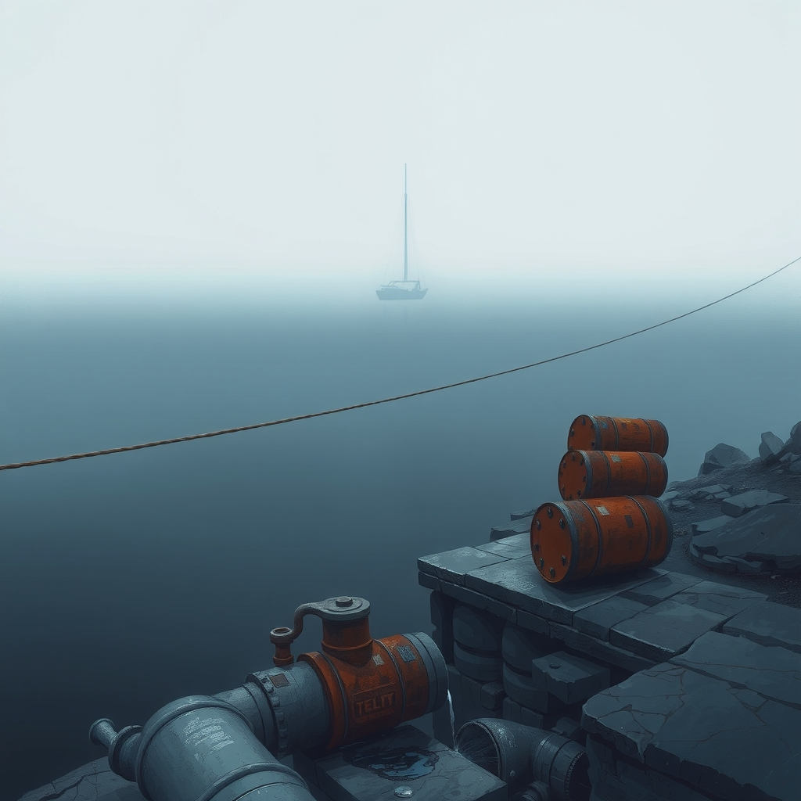
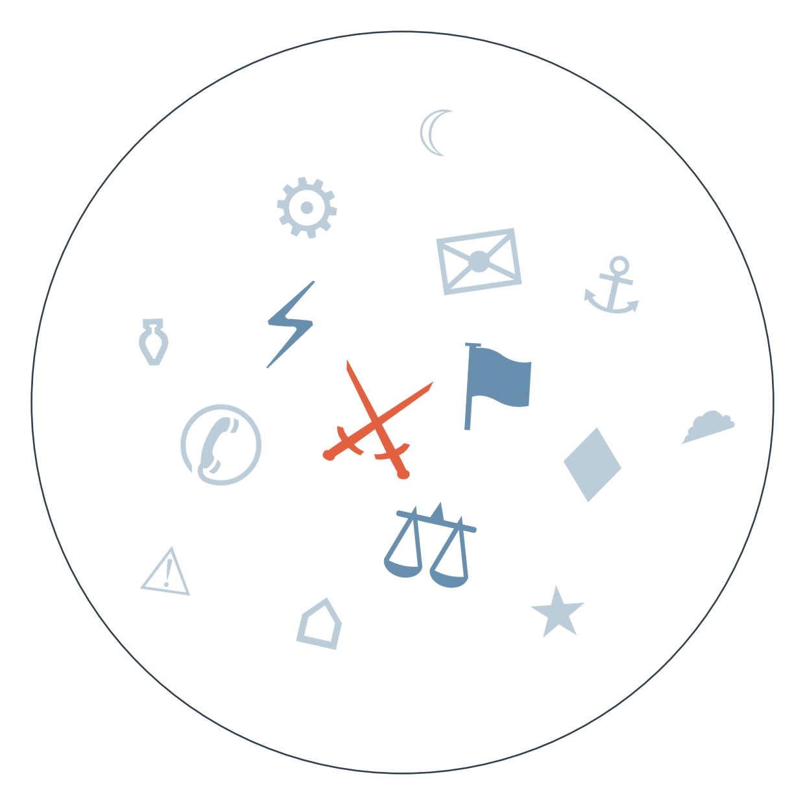

Ранковий бріф · огляд світової преси

Отже, Трамп у соцмережі написав, що Росія й Україна домовились не бити по енергооб'єктах одна одної. Деталей і термінів він не назвав, Кремль мовчить, а Зеленський прямо сказав, що не впевнений, чи справді Москва хоче зупинити удари — Київ говорить лише про готовність до "деескалаційних кроків", якщо це станеться насправді (сюжет про дипломатичне завершення війни триває понад два тижні).
Тим часом над Литвою вночі стався інцидент іншого штибу: винищувачі НАТО збили дрон, який залетів із Білорусі, уламки знайшли біля Кайшядориса, у кількох областях лунала повітряна тривога. Це вже не перший такий випадок за останній місяць — гібридний тиск на східний фланг НАТО не слабшає, попри паралельні розмови про енергетичне перемир'я (сюжет про гібридну війну РФ проти Європи триває понад місяць).
У Затоці — новий виток: хусити вдарили балістичними ракетами й дронами по трьох саудівських містах, поранено щонайменше 13 цивільних. Паралельно США внесли в санкційний список російський ВТБ — за допомогу Ірану обходити обмеження, що робить банк одним із найбільш підсанкційних фінустанов світу (перенесення зустрічі Ірану з країнами Затоки щодо Ормузу — у розділі «Що з чого випливає»).
І окремо — сигнал зовсім іншого масштабу: командування Космічних сил США вперше офіційно підтвердило, що Вашингтон розмістив на орбіті зброю для контролю над космічним простором. Формулювання навмисно розмите — деталей про тип і кількість систем не назвали, але сам факт офіційного визнання завершує роки мовчазних здогадок і відкриває нову гонку в космосі паралельно із земними війнами.

Сюжет 1: заява Трампа про енергоперемир'я Росія-Україна
Замовчують: жодне з видань не наводить конкретних умов угоди — ні строків, ні механізму перевірки, ні того, чи стосується вона й ударів по нафтопереробних заводах, через які Трамп днями тиснув на Зеленського.
Чому розходяться: хорватське видання звикло до серії нездійснених обіцянок Трампа щодо України і тому одразу закладає застереження; італійська ділова газета зацікавлена показати Київ дипломатично активним гравцем, а не об'єктом тиску; польські медіа фізично живуть у зоні ризику — для їхньої аудиторії дрон біля кордону важливіший за формулювання в Truth Social; нідерландське видання ретранслює польську тривогу як приклад того, наскільки крихкий східний фланг НАТО, більше для власної аудиторії, ніж для оцінки самої угоди.
Сюжет 2: атаки хуситів на Саудівську Аравію
Замовчують: у жодному з чотирьох джерел немає прямої згадки про постачання Ірану хуситам, хоча санкції проти ВТБ того ж дня прямо пов'язані саме з цим ланцюгом.
Чому розходяться: ізраїльські видання використовують кризу як аргумент у власній внутрішній дискусії про те, чи потрібна колективна регіональна відповідь замість соло-акцій Ізраїлю; індійські медіа, залежні від нафти й морських шляхів Затоки, тримають дистанцію і фокусуються на економічно-гуманітарному вимірі; ірландське видання дає найширшу геополітичну рамку, бо для нього це не питання союзницьких зобов'язань, а спостереження здалеку.
Ескалація в Затоці: наприкінці серпня хусити взяли під контроль Баб-ель-Мандеб → зустріч Ірану з країнами Затоки щодо Ормузу вдруге перенесли → сьогодні хусити вдарили по трьох саудівських містах, а США синхронно розширили санкції на ВТБ за обхід обмежень проти Ірану → веде до дедалі тіснішого зближення Саудівської Аравії з Вашингтоном у військовому плануванні, попри публічну ставку Ер-Ріяда на діалог з Тегераном.
Гібридний тиск на НАТО: серія погроз і інцидентів у Румунії, Молдові, Польщі, Німеччині та Естонії протягом місяця → затримки потягів біля польського кордону через загрозу дронів (за повідомленнями NOS) → 15 вересня дрон з Білорусі збили над Литвою — веде до дедалі частішого випробування на міцність механізмів реагування Альянсу, при цьому жодного разу відповідальність РФ формально не визнана.
Brent тримається на позначці 108-109 доларів напередодні рішення ФРС. Дохідність десятирічних облігацій США вперше з 2023 року перевищила 5% — ринки закладають ризик підвищення ставки, а не зниження, якого домагається Трамп. Єврокомісія готує правило про пріоритет "Made in Europe" у державних закупівлях, метою названо насамперед китайські компанії та їхні дочірні структури в ЄС.
Bild подає збитий над Литвою дрон як окрему сенсацію під заголовком "зростаюча агресія Росії" — без жодного слова про паралельну заяву Трампа щодо енергоперемир'я, наче це дві різні планети. Швейцарський Blick повторює непідтверджену версію іранського агентства Fars про вибух танкера в Ормузькій протоці від міни, одразу додаючи, що США цю версію заперечують, — типовий випадок, коли таблоїд транслює чужу пропаганду з застереженням замість перевірки.
Заява Трампа про енергоперемир'я — це продовження прямого тиску Вашингтона на воєнну тактику Києва: якщо Україна справді погодиться не бити по нафтопереробних заводах РФ, це вплине на ціни дизелю у світі й на перспективи вересневого саміту, але поки що без підтвердження це лишається обіцянкою, а не фактом.
ЄС продовжив санкції проти Росії лише на тиждень через внутрішню суперечку — сигнал, що єдність блоку не варто вважати автоматичною напередодні кожного наступного продовження пакета, а Україні варто закладати ризик затримок у підтримці.
У Берліні, за даними Генеральної прокуратури Німеччини, звинувачення пред'явлено громадянці з подвійним німецько-українським паспортом за нібито передачу інформації співробітникам російського посольства — розслідування ще триває, але сам факт може посилити перевірки українських громадян у Німеччині й дати додатковий аргумент противникам поблажливої міграційної політики щодо українських біженців.
Україна пропонує майже втричі скоротити скидання води в Дністер, і Кишинів не впевнений, чи вистачить води місту, — тему підняло лише молдовське видання Newsmaker, жодне українське чи західне джерело в дайджесті її не згадує. Мовчать через те, що сюжет виглядає технічним і локальним, хоча йдеться про пряму гуманітарну залежність сусідньої країни від рішень Києва.
Франція вимагає від ЄС зняти санкції з наближеного до Путіна олігарха Усманова в обмін на звільнення французьких громадян у Росії — деталь, яку фіксують лише румунське Digi24 та EUobserver, тоді як великі німецькі й французькі видання в сьогоднішньому наборі цю подробицю оминають. Мовчання пояснюється незручністю: візуалізація прямого торгу з Кремлем як нормальної дипломатичної практики шкодить наративу єдності напередодні продовження санкційного пакета.
Спеціалізоване видання Lawfare описує витік мільйонів американських водійських посвідчень як катастрофу національної безпеки, але жодне з мейнстрімних американських джерел дайджесту цю тему не підхопило. Причина типова — сюжет вимагає технічної експертизи й не має яскравого візуального гачка на тлі суперечки навколо штучного інтелекту та Трампових заяв.
Середня впевненість. Перенесення перемовин Іран-Затока одразу після нової хвилі ударів хуситів може означати підготовку координованої відповіді країн Затоки, а не просто технічну затримку. На основі: gCaptain, Klix — два незалежні джерела.
Середня впевненість. Серія збиттів дронів РФ над Литвою та Польщею протягом місяця може свідчити про тестування меж реагування НАТО перед більшим інцидентом. На основі: Bild, NOS — два джерела.
Середня впевненість. Спільна заява лідерів Шотландії, Уельсу й Північної Ірландії про зближення з ЄС сигналізує про посилення відцентрових процесів у Британії напередодні важливих виборчих циклів. На основі: три джерела різних країн — Le Temps, 444.hu, Kazinform (переказ).
Наші:
Енергоперемир'я між Росією й Україною, анонсоване Трампом 15 вересня, буде порушене принаймні однією стороною до 29.09.2026
США оголосять нові санкції проти структур, пов'язаних із постачанням хуситам, до 29.09.2026
Саудівська Аравія оголосить про офіційний запит колективної відповіді країн Затоки на удари хуситів до 29.09.2026
Кажуть інші:
Дональд Трамп (за Kazinform) — війна з Іраном закінчиться "одразу" після проміжних виборів у Конгрес 3 листопада 2026 року.
Дональд Трамп (за Kommersant) — США посилять підхід до Ірану, якщо республіканці програють проміжні вибори 3 листопада 2026 року.
Володимир Зеленський (за Postimees) — перша система ППО "Фрея" буде готова до кінця 2026 року, до 31.12.2026.
Володимир Зеленський (за Ukrinform) — перші результати перемовин щодо завершення війни можуть стати відомі до 30 вересня 2026 року.
20 вересня (орієнтовно) — очікується формування коаліції в Саксонії-Ангальт після виборів, де АфД уперше отримує реальні шанси на владу. 30 вересня — горизонт, до якого за словами Зеленського можуть стати відомі перші результати перемовин щодо завершення війни. Жовтень — перенесений раунд перемовин Ізраїль-Ліван у Римі щодо Хезболли. 25 жовтня — вибори в Сербії після дострокового оголошення Вучичем. 3 листопада — проміжні вибори в Конгрес США, які, за словами самого Трампа, вплинуть на подальший курс щодо Ірану.
Базова лінія у прогнозах. Відсоток «базово» — це ймовірність події за інерцією, якщо ніхто нічого не робитиме й нічого не зміниться. Друге число — наша впевненість. Прогноз має сенс лише тоді, коли ці числа розходяться: збіг означає, що ми просто описали поточний стан.
Відсотки в карті уваги. Частка країни в денному обсязі зібраних матеріалів. Не показник важливості події, а показник того, скільки місця країна зайняла в новинному потоці за добу. Різкий стрибок частки зазвичай означає, що в країні щось відбувається.
Стрічки, які не відповіли. Не відповіли (13): The Africa Report, Zerkalo, Guancha, Yicai, Fakt, Al Arabiya, Australian Financial Review, Kathimerini, Corriere della Sera, Milenio, China Times, Hromadske, Liga.net.